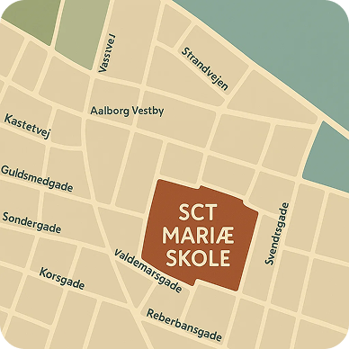

Kontakt Sct. Mariæ Skolen
Her kan du komme i kontakt med både skolens lærere, pædagoger og adminstationen. Vi står alle klar til at svare på dine spørgsmål eller hjælpe dig godt på vej.
Kontakt skolen
call +45 98 13 60 03 mail kontoret@sctms.dk location_on kastetvej 3, 9000 Aalborg Medarbejder på skolen
Lærere
Pædagoger
Adminstation
Maria Jensen
Dansk- og religionslærer
+45 25 12 34 56
mj@sctms.dk
"Jeg er passioneret og elsker at inddrage kreative aktiviteter i undervisningen”
Peter Andersen
Matematik- og fysiklærer
+45 40 12 34 56
pa@sctms.dk
“Jeg brænder for at gøre tal og formler spændende for eleverne”
Mette Hansen
Engelsk- og samfundsfagslærer
+45 26 12 34 56
mh@sctms.dk
“Jeg elsker at åbne verden op for eleverne gennem sprog og samfundsforståelse”
Laura Møller
Idrætslærer
+45 30 12 34 56
im@sctms.dk
“Jeg er energisk og altid klar til at få børnene til at bevægelse sig”
Anna Kristensen
Musik- og billedkunstlærer
+45 21 12 34 56
ak@sctms.dk
“Jeg streber efter at skabe magiske øjeblikke i musiktimerne og billedkunst”
John Nielsen
Natur- og tekniklærer
+45 22 12 34 56
jn@sctms.dk
"Jeg elsker at tage klassen med udenfor for at lære om naturen i praksis”